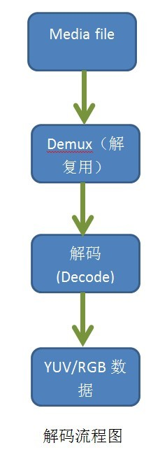
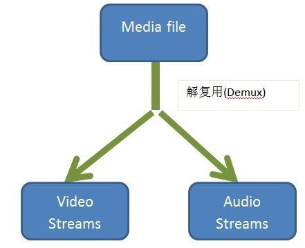
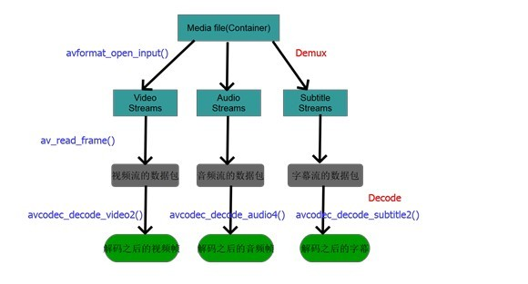

FFmpeg深入分析之零-基础
FFmpeg是相当强大的多媒体编解码框架，在深入分析其源代码之前必须要有基本的多媒体基础知识，否则其源代码会非常晦涩难懂。本文将从介绍一些基本的多媒体只是，主要是为研读ffmpeg源代码做准备，比如一些编解码部分，只有真正了解了多媒体处理的基本流程，研读ffmpeg源代码才能事半功倍。 下面分析一下多媒体中最基本最核心的视频解码过程，平常我们从网上下载一部电影或者一首歌曲，那么相应的多媒体播放器为我们做好了一切工作，我们只用欣赏就ok了。目前几乎所有的主流多媒体播放器都是基于开源多媒体框架ffmpeg来做的，可见ffmpeg的强大。下面是对一个媒体文件进行解码的主要流程：

1. 解复用（Demux）
当我们打开一个多媒体文件之后，第一步就是解复用，称之为Demux。为什么需要这一步，这一步究竟是做什么的？我们知道在一个多媒体文件中，既包括音频也包括视频，而且音频和视频都是分开进行压缩的，因为音频和视频的压缩算法不一样，既然压缩算法不一样，那么肯定解码也不一样，所以需要对音频和视频分别进行解码。虽然音频和视频是分开进行压缩的，但是为了传输过程的方便，将压缩过的音频和视频捆绑在一起进行传输。所以我们解码的第一步就是将这些绑在一起的音频和视频流分开来，也就是传说中的解复用，所以一句话，解复用这一步就是将文件中捆绑在一起的音频流和视频流分开来以方便后面分别对它们进行解码，下面是Demux之后的效果。

2. 解码（Decode）
这一步不用多说，一个多媒体文件肯定是经过某种或几种格式的压缩的，也就是通常所说的视频和音频编码，编码是为了减少数据量，否则的话对我们的存储设备是一个挑战，如果是流媒体的话对网络带宽也是一个几乎不可能完成的任务。所以我们必须对媒体信息进行尽可能的压缩。
3. FFmpeg中解码流程对应的API函数
了解了上面的一个媒体文件从打开到解码的流程，就可以很轻松的阅读ffmpeg代码，ffmpeg的框架也基本是按照这个流程来的，但不是每个流程对应一个API，下面这副图是我分析ffmpeg并根据自己的理解得到的ffmpeg解码流程对应的API，我想这幅图应该对理解ffmpeg和编解码有一些帮助。

Ffmpeg中Demux这一步是通过
avformat_open_input（）这个api来做的，这个api读出文件的头部信息，并做demux，在此之后我们就可以读取媒体文件中的音频和视频流，然后通过av_read_frame()从音频和视频流中读取出基本数据流packet，然后将packet送到avcodec_decode_video2()和相对应的api进行解码。
后续会对ffmpeg的代码进行深入探讨，本文知识一个铺垫！
原文地址